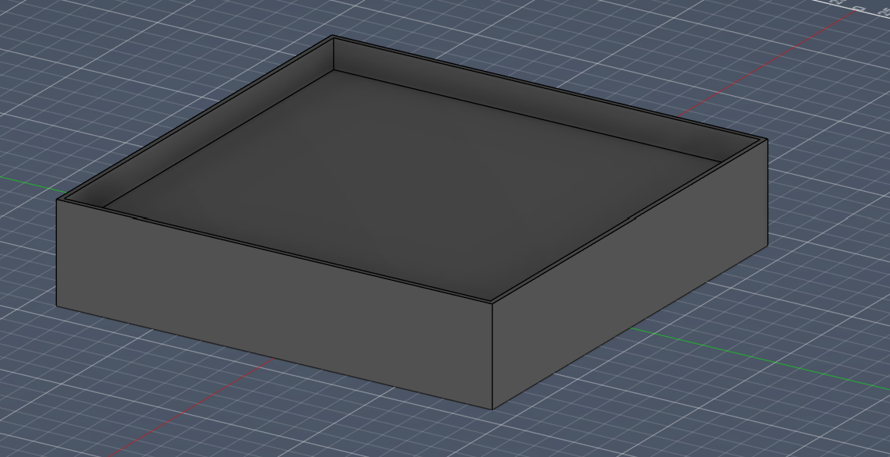

<div class="textcontainer">
<p class="margin"></p>
<h3>Final Project: Robot Boxing</h3>
This is not a finalized design but I have a plan.
</div>
I have the base CADed out, but I will do the robots soon. The robots will be the hard part and I want them to be remote controlled so I am waiting for the week we do RC.
<p></p>
</div>
For the robots, I want to do a simple swinging motion at the press of a button and have it return to rest position. I will also include a shield and a button to raise the shield to protect the head.
I think I will design it so that the heads are attached with a weak magnet potentially? I want them to come off with a moderate amount of force
I was thinking that I would try to have them move with a ball that rolls at the base and there is a square bit around them that keeps them upright.
This is extremely challenging, and if I am not able to get it done or find it impractical, I will make tank treads.
My goal is to have 2 robots. They will have different faces and weapons but be the same otherwise. If I have time I will make more.
</div>
For materials I will need polycarbonate for the base and maybe wood or metal sheets?
As for timeline, I can make the arena before spring break (or right at the begining) and then work on the robots immediately after. I will start with the movement which may be two weeks to finalize, and then the arms and head seperately. I will be testing to make sure that movement doesn't knock the heads off, but the weapon swings do.
</div>